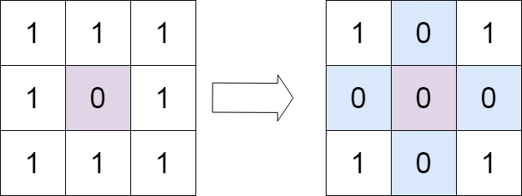
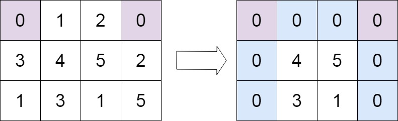

books / hot100 / 03-题解 / 06-矩阵
73. 矩阵置零
题目与约束
给定一个 m x n 的矩阵，如果一个元素为 0，则将其所在行和列的所有元素都设为 0 。请使用 原地 算法。
示例 1：

输入：matrix = [[1,1,1],[1,0,1],[1,1,1]]
输出：[[1,0,1],[0,0,0],[1,0,1]]
示例 2：

输入：matrix = [[0,1,2,0],[3,4,5,2],[1,3,1,5]]
输出：[[0,0,0,0],[0,4,5,0],[0,3,1,0]]
提示：
m == matrix.lengthn == matrix[0].length1 <= m, n <= 200-231 <= matrix[i][j] <= 231 - 1
进阶：
- 一个直观的解决方案是使用
O(mn)的额外空间，但这并不是一个好的解决方案。 - 一个简单的改进方案是使用
O(m + n)的额外空间，但这仍然不是最好的解决方案。 - 你能想出一个仅使用常量空间的解决方案吗？
核心不变量
首行首列兼作标记，另存它们自身是否需要清零。
完整推导
思路推导
-
直觉与痛点（连环爆炸陷阱）：
最无脑的做法：遇到 0，就把整行整列设为 0。
致命痛点：这会引发“连环爆炸”！被你新变成 0 的那些格子，在后续遍历中又会被当成原来的 0，继续把别的行列炸成 0，最后整个矩阵全变成了 0。
-
破局思路 1（额外数组，空间 O(M+N)）：
我们可以先完整扫一遍，把所有有 0 的行号存入一个 Set，列号存入另一个 Set。最后再扫一遍，按照 Set 里的行号列号集体置零。这是非常标准的做法，但空间不是 O(1)。
-
终极破局思路（原地标记法 / 借用第一行和第一列）：
要想不用额外空间，我们可以把矩阵自己的“第一行”和“第一列”当成上面说的 Set（记事本）！
- 但是这里有一个冲突：
matrix[0][0]这个格子，既属于第一行，又属于第一列。如果把它设为 0，到底代表第一行要全变 0，还是第一列要全变 0？ - 解决方案：我们额外用两个 boolean 变量
firstRowZero和firstColZero，先提前记录第一行和第一列原本有没有 0。然后matrix[0][0]以及整个第一行第一列，就可以放心大胆地当“记事本”用了！
Java 实现
C++ 实现
实现来源：经典解法实现
- 用第一行和第一列做标记位（O(1) 额外空间）
- 先记下首行首列自身是否含 0
- 扫描内部：凡 0 就在对应的第一行/第一列打标记
- 按标记清零内部，最后处理首行首列
class Solution { public: void setZeroes(vector<vector<int>>& matrix) { int m = matrix.size(), n = matrix[0].size(); bool row0 = false, col0 = false; for (int c = 0; c < n; c++) if (matrix[0][c] == 0) row0 = true; for (int r = 0; r < m; r++) if (matrix[r][0] == 0) col0 = true; for (int r = 1; r < m; r++) for (int c = 1; c < n; c++) if (matrix[r][c] == 0) matrix[0][c] = matrix[r][0] = 0; for (int r = 1; r < m; r++) for (int c = 1; c < n; c++) if (matrix[0][c] == 0 || matrix[r][0] == 0) matrix[r][c] = 0; if (row0) for (int c = 0; c < n; c++) matrix[0][c] = 0; if (col0) for (int r = 0; r < m; r++) matrix[r][0] = 0; } };Python 实现
实现来源：经典解法实现
- 用第一行和第一列做标记位（O(1) 额外空间）
- 先记下首行首列自身是否含 0
- 扫描内部：凡 0 就在对应的第一行/第一列打标记
- 按标记清零内部，最后处理首行首列
class Solution: def setZeroes(self, matrix: List[List[int]]) -> None: m, n = len(matrix), len(matrix[0]) row0 = any(matrix[0][c] == 0 for c in range(n)) col0 = any(matrix[r][0] == 0 for r in range(m)) for r in range(1, m): for c in range(1, n): if matrix[r][c] == 0: matrix[0][c] = matrix[r][0] = 0 for r in range(1, m): for c in range(1, n): if matrix[0][c] == 0 or matrix[r][0] == 0: matrix[r][c] = 0 if row0: for c in range(n): matrix[0][c] = 0 if col0: for r in range(m): matrix[r][0] = 0Go 实现
实现来源：经典解法实现
- 用第一行和第一列做标记位（O(1) 额外空间）
- 先记下首行首列自身是否含 0
- 扫描内部：凡 0 就在对应的第一行/第一列打标记
- 按标记清零内部，最后处理首行首列
func setZeroes(matrix [][]int) { m, n := len(matrix), len(matrix[0]) row0, col0 := false, false for c := 0; c < n; c++ { if matrix[0][c] == 0 { row0 = true } } for r := 0; r < m; r++ { if matrix[r][0] == 0 { col0 = true } } for r := 1; r < m; r++ { for c := 1; c < n; c++ { if matrix[r][c] == 0 { matrix[0][c], matrix[r][0] = 0, 0 } } } for r := 1; r < m; r++ { for c := 1; c < n; c++ { if matrix[0][c] == 0 || matrix[r][0] == 0 { matrix[r][c] = 0 } } } if row0 { for c := 0; c < n; c++ { matrix[0][c] = 0 } } if col0 { for r := 0; r < m; r++ { matrix[r][0] = 0 } } }C 实现
实现来源：经典解法实现
- 用第一行和第一列做标记位（O(1) 额外空间）
- 先记下首行首列自身是否含 0
- 扫描内部：凡 0 就在对应的第一行/第一列打标记
- 按标记清零内部，最后处理首行首列
void setZeroes(int** matrix, int matrixSize, int* matrixColSize) { int m = matrixSize, n = matrixColSize[0]; int row0 = 0, col0 = 0; for (int c = 0; c < n; c++) if (matrix[0][c] == 0) row0 = 1; for (int r = 0; r < m; r++) if (matrix[r][0] == 0) col0 = 1; for (int r = 1; r < m; r++) for (int c = 1; c < n; c++) if (matrix[r][c] == 0) { matrix[0][c] = 0; matrix[r][0] = 0; } for (int r = 1; r < m; r++) for (int c = 1; c < n; c++) if (matrix[0][c] == 0 || matrix[r][0] == 0) matrix[r][c] = 0; if (row0) for (int c = 0; c < n; c++) matrix[0][c] = 0; if (col0) for (int r = 0; r < m; r++) matrix[r][0] = 0; } - 但是这里有一个冲突：
class Solution {
public void setZeroes(int[][] matrix) {
int m = matrix.length;
int n = matrix[0].length;
boolean firstRowZero = false;
boolean firstColZero = false;
// 1. 先扫雷：确定第一行和第一列原本是否包含 0
for (int i = 0; i < m; i++) {
if (matrix[i][0] == 0) firstColZero = true;
}
for (int j = 0; j < n; j++) {
if (matrix[0][j] == 0) firstRowZero = true;
}
// 2. 核心标记：用第一行和第一列作为“记事本”
// 注意：从下标 1 开始遍历，避开已经被当做记事本的第一行和第一列
for (int i = 1; i < m; i++) {
for (int j = 1; j < n; j++) {
if (matrix[i][j] == 0) {
matrix[i][0] = 0; // 标记该行需要置零
matrix[0][j] = 0; // 标记该列需要置零
}
}
}
// 3. 执行置零：根据记事本上的标记，把内部的格子置零
// 同样从下标 1 开始
for (int i = 1; i < m; i++) {
for (int j = 1; j < n; j++) {
// 如果当前格子对应的行首或列首有 0 标记，它就必须是 0
if (matrix[i][0] == 0 || matrix[0][j] == 0) {
matrix[i][j] = 0;
}
}
}
// 4. 打扫战场：处理第一行和第一列的置零
if (firstColZero) {
for (int i = 0; i < m; i++) matrix[i][0] = 0;
}
if (firstRowZero) {
for (int j = 0; j < n; j++) matrix[0][j] = 0;
}
}
}
复杂度
- 时间复杂度：O(M × N)。我们遍历了矩阵两三次，常数级别的扫描，总体依然是线性的。
- 空间复杂度：O(1)。我们仅仅用了
firstRowZero和firstColZero两个布尔变量，非常优雅地完成了原地操作。
易错点与扩展（极易翻车点）
- 为什么执行置零（步骤3）时，也必须从
i=1,j=1开始？ - 致命翻车：有些同学在步骤 3 从i=0开始更新。这就完了！因为第一行是你的“记事本”，如果你在更新内部元素之前，提前把第一行的记事本数据给抹成了 0，那后面的列就全都失去原本的标记了。记事本必须留到最后才处理（步骤4）。 - 更极致的优化（只用 1 个变量）：
- 能不能连 2 个 boolean 都不用，只用 1 个？可以！第一行的标记存放在
matrix[0][0]，第一列的标记存放在额外的一个变量col0里。但这种做法代码可读性会略微下降，面试中写我上面提供的 2 个 boolean 变量的版本是最清晰、最不容易出错的。